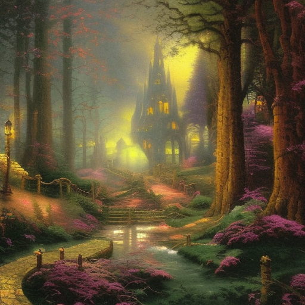

It wasn’t the first time Kaida was surrounded by busy people spilling unfamiliar words, strange scents wafting across an unknown tavern room.
Training out the noise was easy. She was exhausted anyway.
She didn’t pay attention to the way curious stares seemed to blatantly pick her apart as she slumped, quite deep in thought, on a buttery soft chair set only a few feet from the blazing fire. It is so cold here, she thought. And the people are so light.
She didn’t think she’d ever seen so many snowpeople in her entire life.
But these thoughts were trivial. She wasn’t sure where her father went, or what their next plan was exactly, but as she turned her head to gaze out at the clouded night through a window pushed wide open, her mind fixated on one thing.
That castle was enormous.
She had thought, traveling the last few miles in the dark, that the mountains in this country were strangely shaped. The ones she’d seen before seemed normal enough, but this mountain, the looming bulk of it just hazily visible in the starlight, was odd.
When she’d asked her father why the mountain split into rising columns like tree trunks, he’d furrowed his brow with a bemused smile and leaned over to look at the view through her window.
“Ah, that is the castle, Kaida. It does rather blend into the frame of the mountain. You’ll see it clearer by morning light.”
She had asked no more questions. Her brain didn’t have room. It was too busy comprehending the incomprehensible puzzle her father had just presented her with.
And she wasn’t even being dramatic. Kaida had leaned farther out her window, to her father’s slight chuckle. Her eyes had systematically searched the edges of the hulking figure. When finally the image snapped into place, when finally her mind could understand what her eyes were seeing – she could now just pick out the main body of the thing, and the dozens (maybe hundreds) of towers that spiraled off, and the occasional flicker of light that actually confirmed the existence of living beings inside the colossus – she let her mouth hang open.
She had turned to her father.
“Never mind,” she had said. “Let’s go back.”
At this his deep laugh filled the carriage. “Unfortunately, sweetheart, we have nowhere we can head back to.”
Her eyes had already turned her whole self back to the view outside her little window. She just couldn’t believe it.
And as they had neared the village – which Kaida might have subjected to similar awestruck scrutiny, on a much smaller scale, had she not been rapturously gazing upon the castle the entire time – she had realized, with heightened excitement and bewilderment, that the thing continued to grow.
It was this last thing that she pondered now, sequestered in a cozy inn parlor, waiting for her father to secure them rooms.
(She didn’t notice the wide eyed looks of the host and hostess at her father’s humble introduction of himself, or the way the servants bustled to finish readying the finest suite in the establishment mere seconds after the hostess’ furtive commands).
Kaida was usually much more observant. She was also easily fascinated.
 “Ah, that is the castle, Kaida. It does rather blend into the frame of the mountain. You’ll see it clearer by morning light.” Back to Top